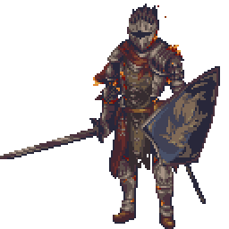

Bem-vindo à Taverna! ⚔️
Este site é um projeto de uso pessoal e sem fins lucrativos, desenvolvido com o único objetivo de facilitar e agilizar a criação de fichas e a organização das nossas campanhas de Dungeons & Dragons entre amigos.
Escolha uma das opções no menu superior para começar a sua jornada!
